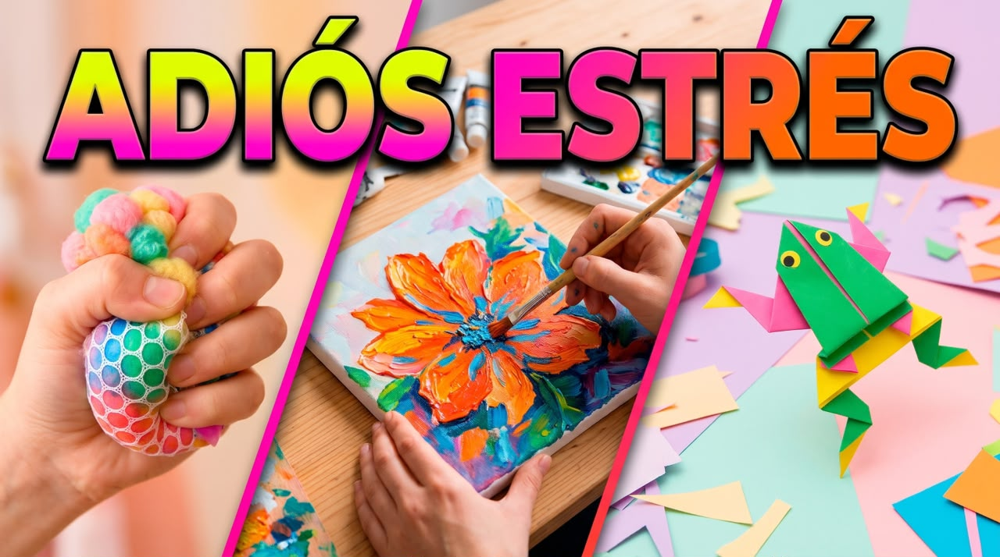
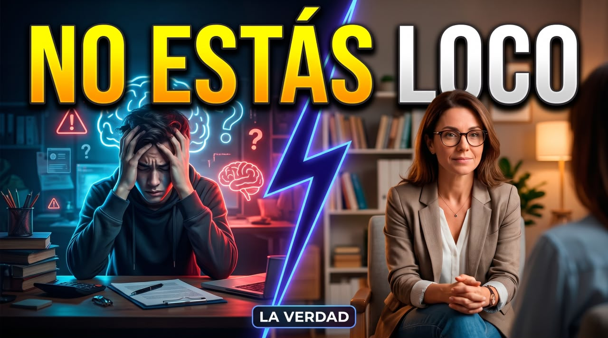
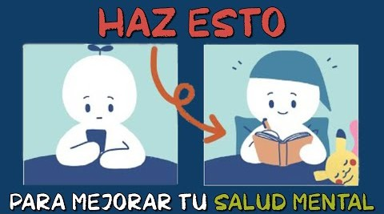
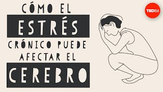
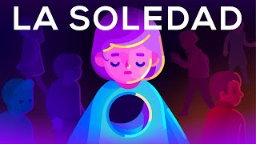
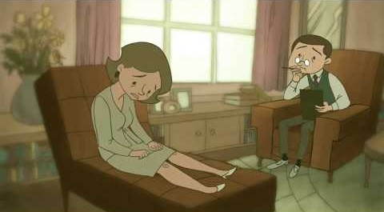

Línea de la Vida
24 horas · GratuitaServicio nacional de la Secretaría de Salud. Ofrece orientación y apoyo emocional ante crisis, depresión, riesgo suicida o consumo de sustancias.
Llamar · 800 911 2000

3 Manualidades para reducir el estrés.
La caja de los pensamientos
¿Estás estresado? Tenemos actividades que pueden calmar ese malestar, acompañanos a conocerlas.
¿Por qué nos cuesta tanto cuidar la Salud Mental? | Entrevista con la Lic. Claudia Hernández
La caja de los pensamientos
Entrevista con la Lic. Claudia Hernández, psicóloga egresada de la UAEMéx.

"No tienes que estar loco para ir al psicólogo" 🧠 | La verdad sobre la Salud Mental
La caja de los pensamientos
2da parte de la entrevista con la Lic. Claudia Hernández, psicóloga egresada de la UAEMéx.


8 hábitos saludables para mejorar tu salud mental
Sapiencia práctica
Todos deberíamos dedicar algo de tiempo y esfuerzo para mejorar nuestra salud mental

Por qué cada vez hay más depresión y ansiedad | José Luis Marín, psiquiatra
José Luis Marín - Formación Psicoterapia
¿La salud mental existe realmente o es una forma de nombrar el sufrimiento humano? En este vídeo, el médico y psicoterapeuta José Luis Marín plantea una idea provocadora.




SALUD MENTAL
Psicólogo Jorge Alberto Franco Carranza
Animación
No sabía que estabas pidiendo ayuda. | Sketch
La caja de los pensamientos
Aveces no se pide ayuda de forma evidente, puedes salvarle la vida a alguien al escucharla.
Infancia no es destino: cómo sanar el trauma | Israel Castillo, psicólogo
Aprendemos juntos Mex
Israel Castillo, psicólogo especializado en trauma, explora de manera clara y profunda el impacto de los eventos traumáticos en la vida de las personas y la importancia de las relaciones interpersonales en la recuperación.
Conoce las principales redes de contacto a las que puedes comunicarte
Si tú o alguien más está en peligro inmediato, llama al 911.
Servicio nacional de la Secretaría de Salud. Ofrece orientación y apoyo emocional ante crisis, depresión, riesgo suicida o consumo de sustancias.
Llamar · 800 911 2000Consejo psicológico e intervención en crisis por teléfono, atendido por profesionales de la psicología.
Llamar · 55 5259 8121Atención psicológica y asesoría jurídica del Consejo Ciudadano. Puedes llamar o escribir por WhatsApp si prefieres no hablar.
55 5533 5533Línea de apoyo emocional por teléfono y chat, con orientación para sentirte mejor y encontrar recursos cerca de ti.
Llamar · 55 5658 1111Atención y orientación para personas de la comunidad LGBT+ y sus familias.
Llamar · 800 000 5428Si hay riesgo inmediato para la vida o la integridad de alguien, este es el número al que debes llamar.
Llamar · 911